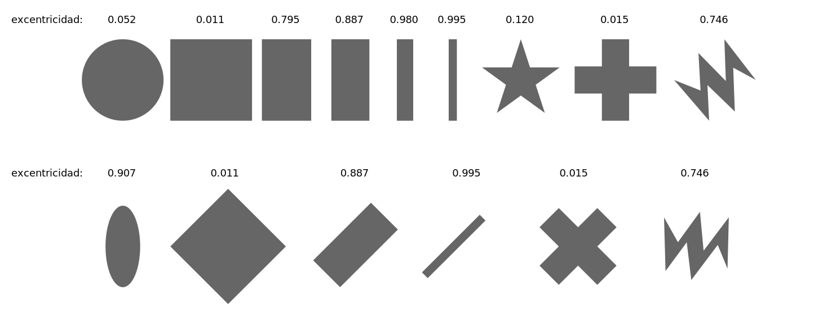
16 Dimensionality Reduction
Dimensionality reduction transforms a data set from a high-dimensional space into a low-dimensional space, and can be a good choice when you suspect there are “too many” variables. An excess of variables, usually predictors, can be a problem because it is difficult to understand or visualize data in higher dimensions.
16.1 What Problems Can Dimensionality Reduction Solve?
Dimensionality reduction can be used either in feature engineering or in exploratory data analysis. For example, in high-dimensional biology experiments, one of the first tasks, before any modeling, is to determine if there are any unwanted trends in the data (e.g., effects not related to the question of interest, such as lab-to-lab differences). Debugging the data is difficult when there are hundreds of thousands of dimensions, and dimensionality reduction can be an aid for exploratory data analysis.
Another potential consequence of having a multitude of predictors is possible harm to a model. The simplest example is a method like ordinary linear regression where the number of predictors should be less than the number of data points used to fit the model. Another issue is multicollinearity, where between-predictor correlations can negatively impact the mathematical operations used to estimate a model. If there are an extremely large number of predictors, it is fairly unlikely that there are an equal number of real underlying effects. Predictors may be measuring the same latent effect(s), and thus such predictors will be highly correlated. Many dimensionality reduction techniques thrive in this situation. In fact, most can be effective only when there are such relationships between predictors that can be exploited.
When starting a new modeling project, reducing the dimensions of the data may provide some intuition about how hard the modeling problem may be.
Principal component analysis (PCA) is one of the most straightforward methods for reducing the number of columns in the data set because it relies on linear methods and is unsupervised (i.e., does not consider the outcome data). For a high-dimensional classification problem, an initial plot of the main PCA components might show a clear separation between the classes. If this is the case, then it is fairly safe to assume that a linear classifier might do a good job. However, the converse is not true; a lack of separation does not mean that the problem is insurmountable.
The dimensionality reduction methods discussed in this chapter are generally not feature selection methods. Methods such as PCA represent the original predictors using a smaller subset of new features. All of the original predictors are required to compute these new features. The exception to this are sparse methods that have the ability to completely remove the impact of predictors when creating the new features.
This chapter has two goals:
Demonstrate how to use recipes to create a small set of features that capture the main aspects of the original predictor set.
Describe how recipes can be used on their own (as opposed to being used in a workflow object, as in Section @ref(using-recipes)).
The latter is helpful when testing or debugging a recipe. However, as described in Section @ref(using-recipes), the best way to use a recipe for modeling is from within a workflow object.
In addition to the tidymodels package, this chapter uses the following packages: baguette, beans, bestNormalize, corrplot, discrim, embed, ggforce, klaR, learntidymodels,1 mixOmics,2 and uwot.
16.2 A Picture Is Worth a Thousand… Beans
Let’s walk through how to use dimensionality reduction with recipes for an example data set. Koklu and Ozkan (2020) published a data set of visual characteristics of dried beans and described methods for determining the varieties of dried beans in an image. While the dimensionality of these data is not very large compared to many real-world modeling problems, it does provide a nice working example to demonstrate how to reduce the number of features. From their manuscript:
The primary objective of this study is to provide a method for obtaining uniform seed varieties from crop production, which is in the form of population, so the seeds are not certified as a sole variety. Thus, a computer vision system was developed to distinguish seven different registered varieties of dry beans with similar features in order to obtain uniform seed classification. For the classification model, images of 13,611 grains of 7 different registered dry beans were taken with a high-resolution camera.
Each image contains multiple beans. The process of determining which pixels correspond to a particular bean is called image segmentation. These pixels can be analyzed to produce features for each bean, such as color and morphology (i.e., shape). These features are then used to model the outcome (bean variety) because different bean varieties look different. The training data come from a set of manually labeled images, and this data set is used to create a predictive model that can distinguish between seven bean varieties: Cali, Horoz, Dermason, Seker, Bombay, Barbunya, and Sira. Producing an effective model can help manufacturers quantify the homogeneity of a batch of beans.
There are numerous methods for quantifying shapes of objects (Mingqiang, Kidiyo, and Joseph 2008). Many are related to the boundaries or regions of the object of interest. Example of features include:
The area (or size) can be estimated using the number of pixels in the object or the size of the convex hull around the object.
We can measure the perimeter using the number of pixels in the boundary as well as the area of the bounding box (the smallest rectangle enclosing an object).
The major axis quantifies the longest line connecting the most extreme parts of the object. The minor axis is perpendicular to the major axis.
We can measure the compactness of an object using the ratio of the object’s area to the area of a circle with the same perimeter. For example, the symbols “•” and “×” have very different compactness.
There are also different measures of how elongated or oblong an object is. For example, the eccentricity statistic is the ratio of the major and minor axes. There are also related estimates for roundness and convexity.
Notice the eccentricity for the different shapes in Figure @ref(fig:eccentricity).
Shapes such as circles and squares have low eccentricity while oblong shapes have high values. Also, the metric is unaffected by the rotation of the object.
Many of these image features have high correlations; objects with large areas are more likely to have large perimeters. There are often multiple methods to quantify the same underlying characteristics (e.g., size).
In the bean data, 16 morphology features were computed: area, perimeter, major axis length, minor axis length, aspect ratio, eccentricity, convex area, equiv diameter, extent, solidity, roundness, compactness, shape factor 1, shape factor 2, shape factor 3, and shape factor 4. The latter four are described in Symons and Fulcher (1988).
We can begin by loading the data:
library(tidymodels)
tidymodels_prefer()
library(beans)It is important to maintain good data discipline when evaluating dimensionality reduction techniques, especially if you will use them within a model.
For our analyses, we start by holding back a testing set with initial_split(). The remaining data are split into training and validation sets:
set.seed(1601)
bean_split <- initial_validation_split(beans, strata = class, prop = c(0.75, 0.125))
## Warning: Too little data to stratify.
## • Resampling will be unstratified.
bean_split
## <Training/Validation/Testing/Total>
## <10206/1702/1703/13611>
# Return data frames:
bean_train <- training(bean_split)
bean_test <- testing(bean_split)
bean_validation <- validation(bean_split)
set.seed(1602)
# Return an 'rset' object to use with the tune functions:
bean_val <- validation_set(bean_split)
bean_val$splits[[1]]
## <Training/Validation/Total>
## <10206/1702/11908>To visually assess how well different methods perform, we can estimate the methods on the training set (n = 10,206 beans) and display the results using the validation set (n = 1,702).
Before beginning any dimensionality reduction, we can spend some time investigating our data. Since we know that many of these shape features are probably measuring similar concepts, let’s take a look at the correlation structure of the data in Figure @ref(fig:beans-corr-plot) using this code.
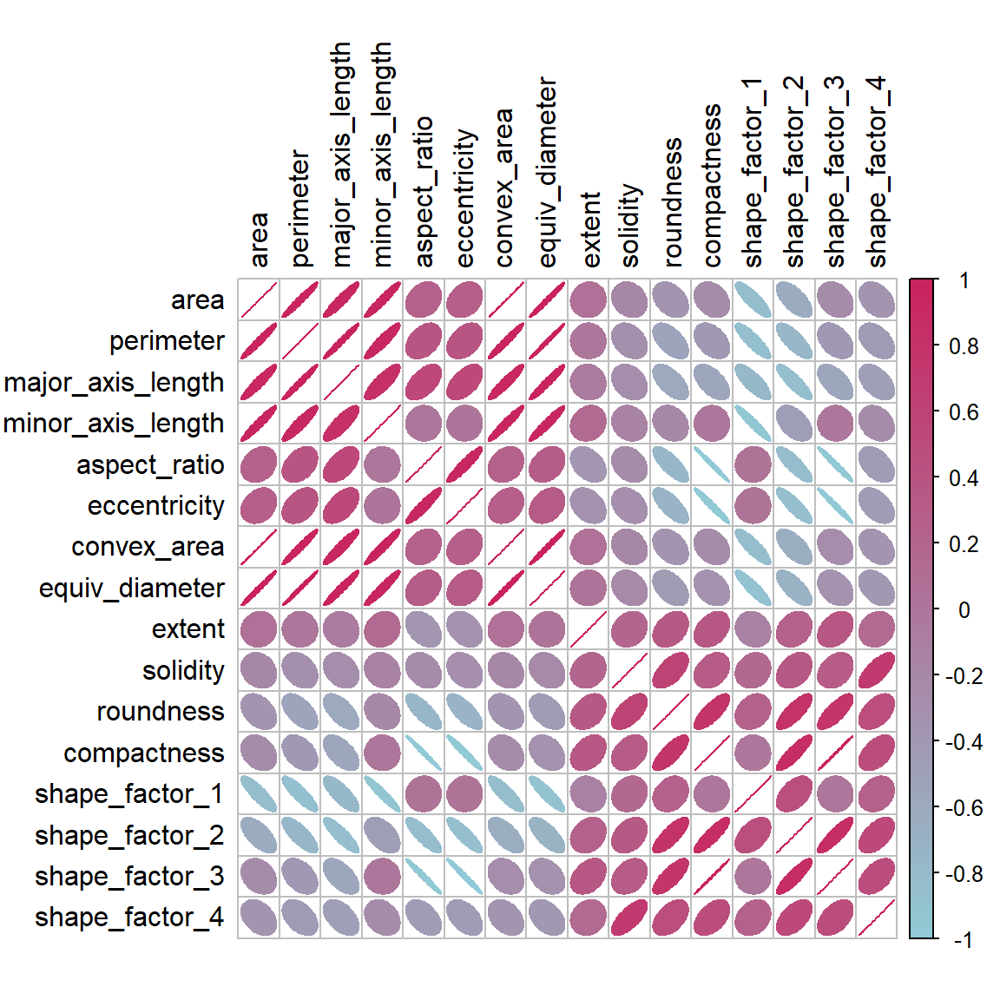
Many of these predictors are highly correlated, such as area and perimeter or shape factors 2 and 3. While we don’t take the time to do it here, it is also important to see if this correlation structure significantly changes across the outcome categories. This can help create better models.
16.3 A Starter Recipe
It’s time to look at the beans data in a smaller space. We can start with a basic recipe to preprocess the data prior to any dimensionality reduction steps. Several predictors are ratios and so are likely to have skewed distributions. Such distributions can wreak havoc on variance calculations (such as the ones used in PCA). The bestNormalize package has a step that can enforce a symmetric distribution for the predictors. We’ll use this to mitigate the issue of skewed distributions:
library(bestNormalize)
bean_rec <-
# Use the training data from the bean_val split object
recipe(class ~ ., data = bean_train) %>%
step_zv(all_numeric_predictors()) %>%
step_orderNorm(all_numeric_predictors()) %>%
step_normalize(all_numeric_predictors())Remember that when invoking the recipe() function, the steps are not estimated or executed in any way.
This recipe will be extended with additional steps for the dimensionality reduction analyses. Before doing so, let’s go over how a recipe can be used outside of a workflow.
16.4 Recipes in the Wild
As mentioned in Section @ref(using-recipes), a workflow containing a recipe uses fit() to estimate the recipe and model, then predict() to process the data and make model predictions. There are analogous functions in the recipes package that can be used for the same purpose:
-
prep(recipe, training)fits the recipe to the training set. -
bake(recipe, new_data)applies the recipe operations tonew_data.
Figure @ref(fig:recipe-process) summarizes this. Let’s look at each of these functions in more detail.
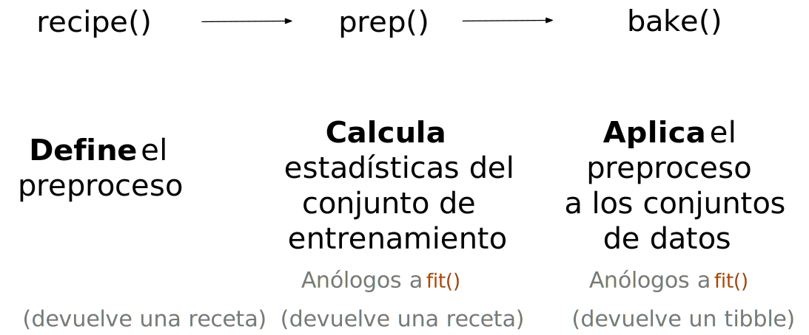
16.4.1 Preparing a recipe
Let’s estimate bean_rec using the training set data, with prep(bean_rec):
bean_rec_trained <- prep(bean_rec)
bean_rec_trained
##
## ── Recipe ───────────────────────────────────────────────────────────────────────────
##
## ── Inputs
## Number of variables by role
## outcome: 1
## predictor: 16
##
## ── Training information
## Training data contained 10206 data points and no incomplete rows.
##
## ── Operations
## • Zero variance filter removed: <none> | Trained
## • orderNorm transformation on: area, perimeter, major_axis_length, ... | Trained
## • Centering and scaling for: area, perimeter, major_axis_length, ... | TrainedNote in the output that the steps have been trained and that the selectors are no longer general (i.e., all_numeric_predictors()); they now show the actual columns that were selected. Also, prep(bean_rec) does not require the training argument. You can pass any data into that argument, but omitting it means that the original data from the call to recipe() will be used. In our case, this was the training set data.
One important argument to prep() is retain. When retain = TRUE (the default), the estimated version of the training set is kept within the recipe. This data set has been pre-processed using all of the steps listed in the recipe. Since prep() has to execute the recipe as it proceeds, it may be advantageous to keep this version of the training set so that, if that data set is to be used later, redundant calculations can be avoided. However, if the training set is big, it may be problematic to keep such a large amount of data in memory. Use retain = FALSE to avoid this.
Once new steps are added to this estimated recipe, reapplying prep() will estimate only the untrained steps. This will come in handy when we try different feature extraction methods.
If you encounter errors when working with a recipe, prep() can be used with its verbose option to troubleshoot:
bean_rec_trained %>%
step_dummy(cornbread) %>% # <- not a real predictor
prep(verbose = TRUE)
## oper 1 step zv [pre-trained]
## oper 2 step orderNorm [pre-trained]
## oper 3 step normalize [pre-trained]
## oper 4 step dummy [training]
## Error in `step_dummy()`:
## Caused by error in `prep()`:
## ! Can't subset columns that don't exist.
## ✖ Column `cornbread` doesn't exist.Another option that can help you understand what happens in the analysis is log_changes:
show_variables <-
bean_rec %>%
prep(log_changes = TRUE)
## step_zv (zv_RLYwH): same number of columns
##
## step_orderNorm (orderNorm_Jx8oD): same number of columns
##
## step_normalize (normalize_GU75D): same number of columns16.4.2 Baking the recipe
Using bake() with a recipe is much like using predict() with a model; the operations estimated from the training set are applied to any data, like testing data or new data at prediction time.
For example, the validation set samples can be processed:
bean_val_processed <- bake(bean_rec_trained, new_data = bean_validation)Figure @ref(fig:bean-area) shows histograms of the area predictor before and after the recipe was prepared.
library(patchwork)
p1 <-
bean_validation %>%
ggplot(aes(x = area)) +
geom_histogram(bins = 30, color = "white", fill = "blue", alpha = 1/3) +
ggtitle("Original validation set data")
p2 <-
bean_val_processed %>%
ggplot(aes(x = area)) +
geom_histogram(bins = 30, color = "white", fill = "red", alpha = 1/3) +
ggtitle("Processed validation set data")
p1 + p2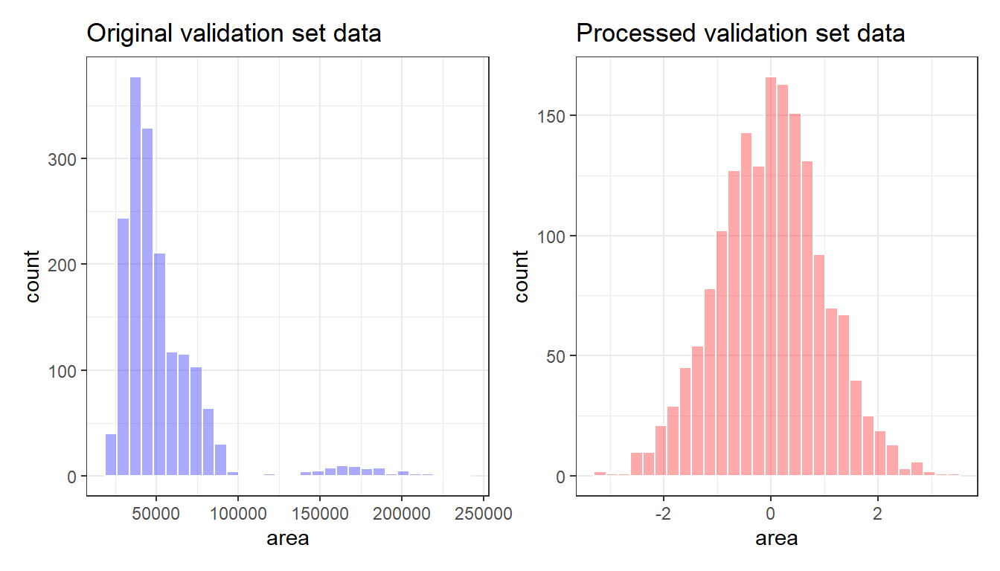
area predictor before and after preprocessingTwo important aspects of bake() are worth noting here.
First, as previously mentioned, using prep(recipe, retain = TRUE) keeps the existing processed version of the training set in the recipe. This enables the user to use bake(recipe, new_data = NULL), which returns that data set without further computations. For example:
If the training set is not pathologically large, using this value of retain can save a lot of computational time.
Second, additional selectors can be used in the call to specify which columns to return. The default selector is everything(), but more specific directives can be used.
We will use prep() and bake() in the next section to illustrate some of these options.
16.5 Feature Extraction Techniques
Since recipes are the primary option in tidymodels for dimensionality reduction, let’s write a function that will estimate the transformation and plot the resulting data in a scatter plot matrix via the ggforce package:
library(ggforce)
plot_validation_results <- function(recipe, dat = bean_validation) {
recipe %>%
# Estimate any additional steps
prep() %>%
# Process the data (the validation set by default)
bake(new_data = dat) %>%
# Create the scatterplot matrix
ggplot(aes(x = .panel_x, y = .panel_y, color = class, fill = class)) +
geom_point(alpha = 0.4, size = 0.5) +
geom_autodensity(alpha = .3) +
facet_matrix(vars(-class), layer.diag = 2) +
scale_color_brewer(palette = "Dark2") +
scale_fill_brewer(palette = "Dark2")
}We will reuse this function several times in this chapter.
A series of several feature extraction methodologies are explored here. An overview of most can be found in Section 6.3.1 of Kuhn and Johnson (2020) and the references therein. The UMAP method is described in McInnes, Healy, and Melville (2020).
16.5.1 Principal component analysis
We’ve mentioned PCA several times already in this book, and it’s time to go into more detail. PCA is an unsupervised method that uses linear combinations of the predictors to define new features. These features attempt to account for as much variation as possible in the original data. We add step_pca() to the original recipe and use our function to visualize the results on the validation set in Figure @ref(fig:bean-pca) using:
bean_rec_trained %>%
step_pca(all_numeric_predictors(), num_comp = 4) %>%
plot_validation_results() +
ggtitle("Principal Component Analysis")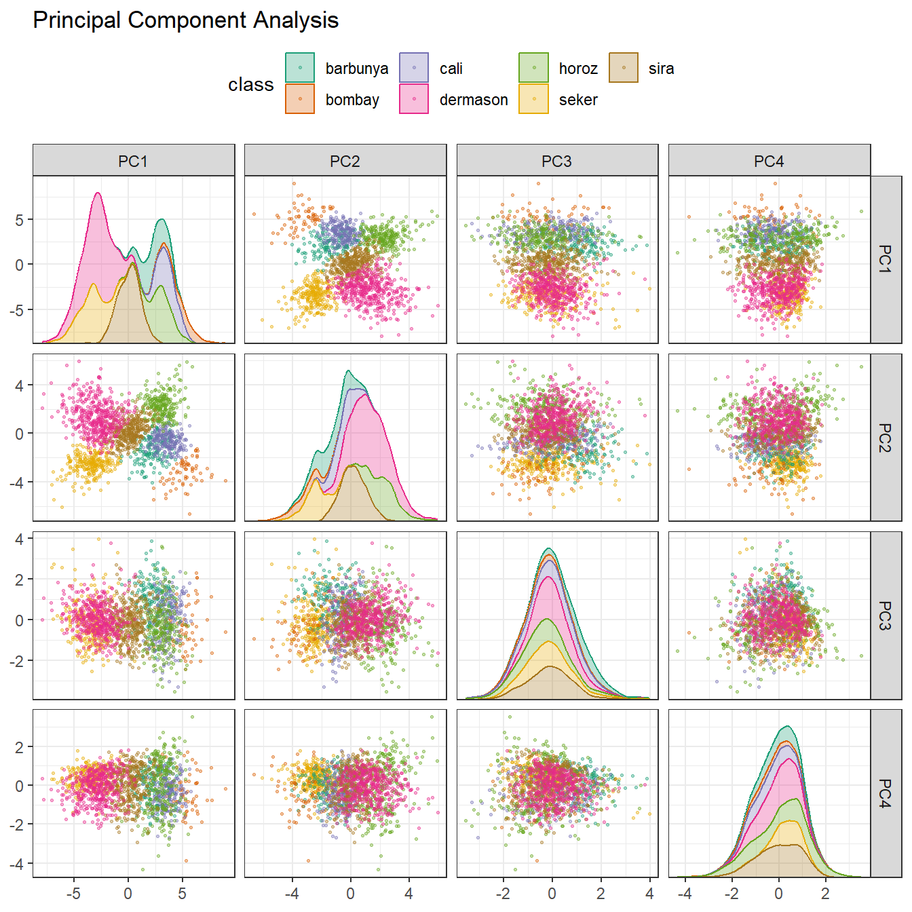
We see that the first two components PC1 and PC2, especially when used together, do an effective job distinguishing between or separating the classes. This may lead us to expect that the overall problem of classifying these beans will not be especially difficult.
Recall that PCA is unsupervised. For these data, it turns out that the PCA components that explain the most variation in the predictors also happen to be predictive of the classes. What features are driving performance? The learntidymodels package has functions that can help visualize the top features for each component. We’ll need the prepared recipe; the PCA step is added in the following code along with a call to prep():
library(learntidymodels)
bean_rec_trained %>%
step_pca(all_numeric_predictors(), num_comp = 4) %>%
prep() %>%
plot_top_loadings(component_number <= 4, n = 5) +
scale_fill_brewer(palette = "Paired") +
ggtitle("Principal Component Analysis")This produces Figure @ref(fig:pca-loadings).
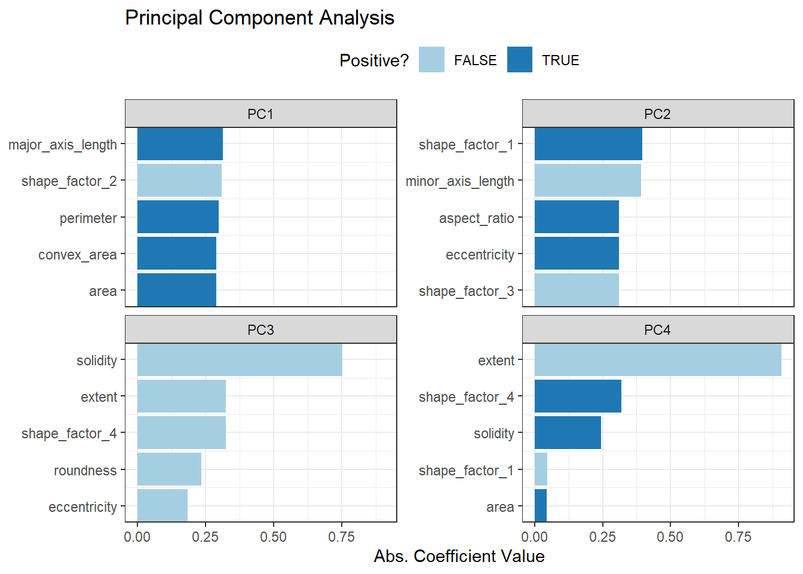
The top loadings are mostly related to the cluster of correlated predictors shown in the top-left portion of the previous correlation plot: perimeter, area, major axis length, and convex area. These are all related to bean size. Shape factor 2, from Symons and Fulcher (1988), is the area over the cube of the major axis length and is therefore also related to bean size. Measures of elongation appear to dominate the second PCA component.
16.5.2 Partial least squares
PLS, which we introduced in Section @ref(submodel-trick), is a supervised version of PCA. It tries to find components that simultaneously maximize the variation in the predictors while also maximizing the relationship between those components and the outcome. Figure @ref(fig:bean-pls) shows the results of this slightly modified version of the PCA code:
bean_rec_trained %>%
step_pls(all_numeric_predictors(), outcome = "class", num_comp = 4) %>%
plot_validation_results() +
ggtitle("Partial Least Squares")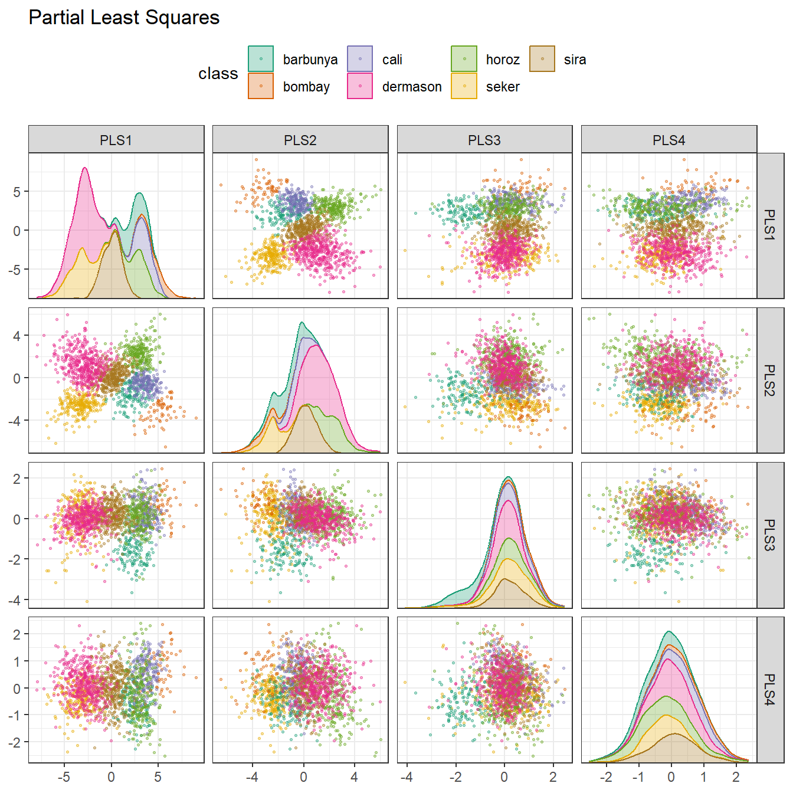
The first two PLS components plotted in Figure @ref(fig:bean-pls) are nearly identical to the first two PCA components! We find this result because those PCA components are so effective at separating the varieties of beans. The remaining components are different. Figure @ref(fig:pls-loadings) visualizes the loadings, the top features for each component.
bean_rec_trained %>%
step_pls(all_numeric_predictors(), outcome = "class", num_comp = 4) %>%
prep() %>%
plot_top_loadings(component_number <= 4, n = 5, type = "pls") +
scale_fill_brewer(palette = "Paired") +
ggtitle("Partial Least Squares")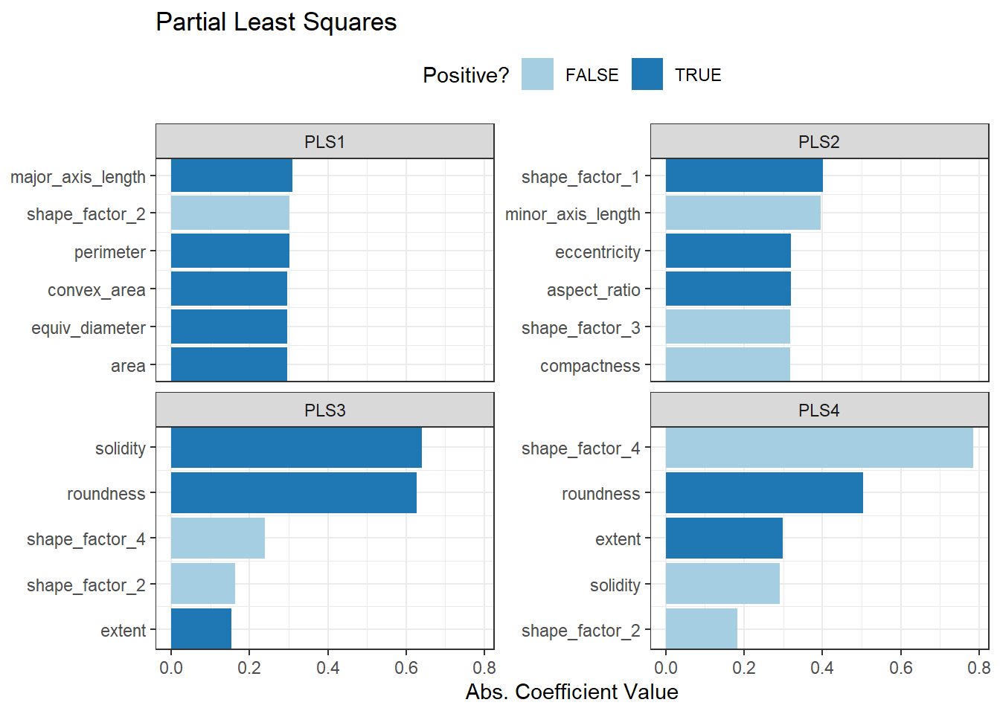
Solidity (i.e., the density of the bean) drives the third PLS component, along with roundness. Solidity may be capturing bean features related to “bumpiness” of the bean surface since it can measure irregularity of the bean boundaries.
16.5.3 Independent component analysis
ICA is slightly different than PCA in that it finds components that are as statistically independent from one another as possible (as opposed to being uncorrelated). It can be thought of as maximizing the “non-Gaussianity” of the ICA components, or separating information instead of compressing information like PCA. Let’s use step_ica() to produce Figure @ref(fig:bean-ica):
bean_rec_trained %>%
step_ica(all_numeric_predictors(), num_comp = 4) %>%
plot_validation_results() +
ggtitle("Independent Component Analysis")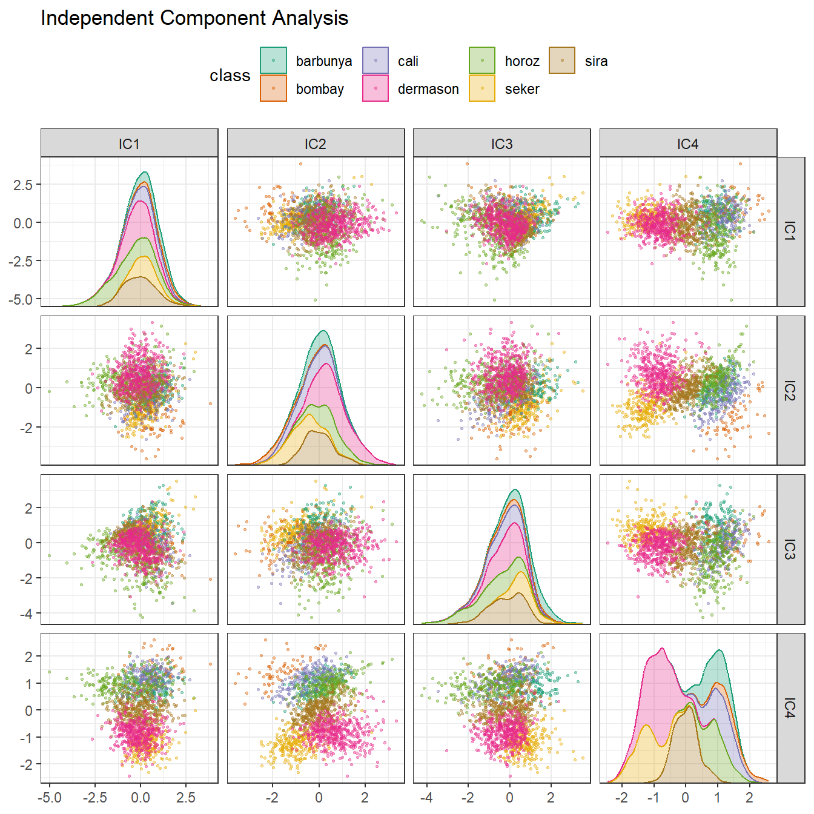
Inspecting this plot, there does not appear to be much separation between the classes in the first few components when using ICA. These independent (or as independent as possible) components do not separate the bean types.
16.5.4 Uniform manifold approximation and projection
UMAP is similar to the popular t-SNE method for nonlinear dimension reduction. In the original high-dimensional space, UMAP uses a distance-based nearest neighbor method to find local areas of the data where the data points are more likely to be related. The relationship between data points is saved as a directed graph model where most points are not connected.
From there, UMAP translates points in the graph to the reduced dimensional space. To do this, the algorithm has an optimization process that uses cross-entropy to map data points to the smaller set of features so that the graph is well approximated.
To create the mapping, the embed package contains a step function for this method, visualized in Figure @ref(fig:bean-umap).

While the between-cluster space is pronounced, the clusters can contain a heterogeneous mixture of classes.
There is also a supervised version of UMAP:
bean_rec_trained %>%
step_umap(all_numeric_predictors(), outcome = "class", num_comp = 4) %>%
plot_validation_results() +
ggtitle("UMAP (supervised)")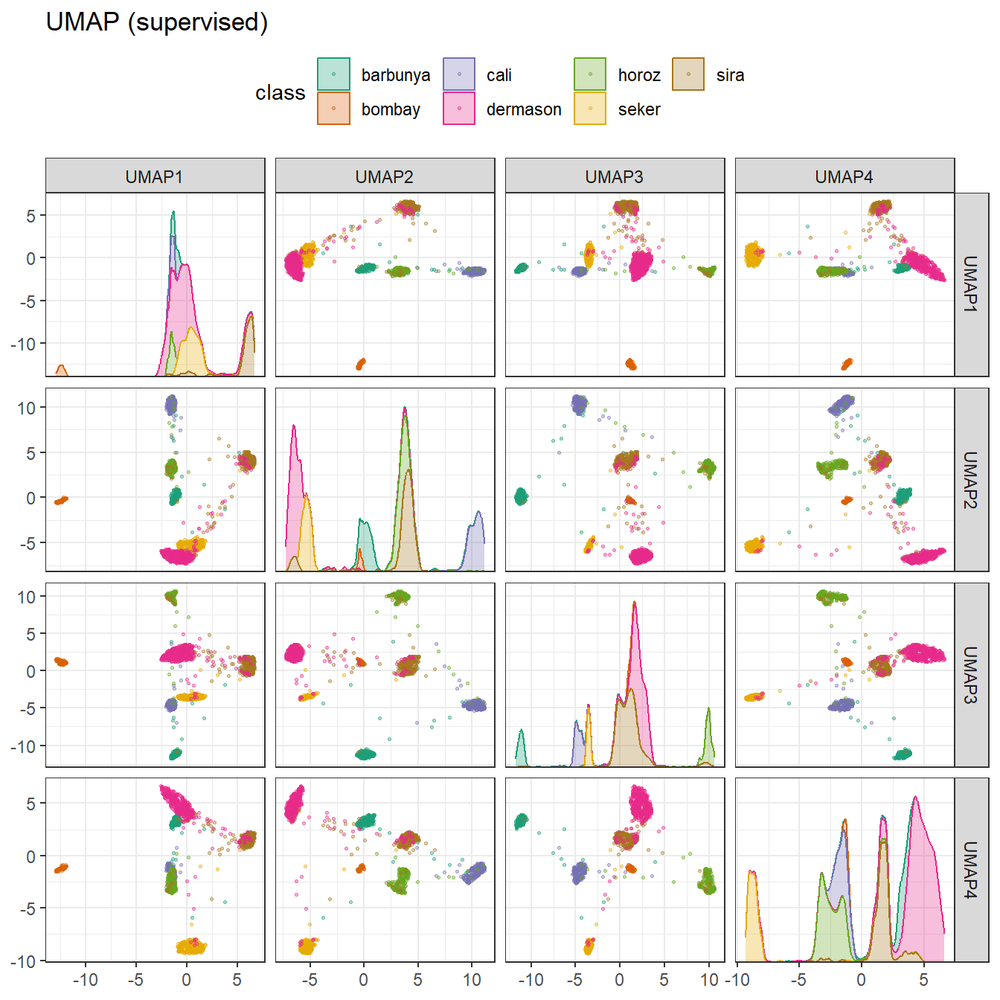
The supervised method shown in Figure @ref(fig:bean-umap-supervised) looks promising for modeling the data.
UMAP is a powerful method to reduce the feature space. However, it can be very sensitive to tuning parameters (e.g., the number of neighbors and so on). For this reason, it would help to experiment with a few of the parameters to assess how robust the results are for these data.
16.6 Modeling
Both the PLS and UMAP methods are worth investigating in conjunction with different models. Let’s explore a variety of different models with these dimensionality reduction techniques (along with no transformation at all): a single layer neural network, bagged trees, flexible discriminant analysis (FDA), naive Bayes, and regularized discriminant analysis (RDA).
Now that we are back in “modeling mode,” we’ll create a series of model specifications and then use a workflow set to tune the models in the following code. Note that the model parameters are tuned in conjunction with the recipe parameters (e.g., size of the reduced dimension, UMAP parameters).
library(baguette)
library(discrim)
mlp_spec <-
mlp(hidden_units = tune(), penalty = tune(), epochs = tune()) %>%
set_engine('nnet') %>%
set_mode('classification')
bagging_spec <-
bag_tree() %>%
set_engine('rpart') %>%
set_mode('classification')
fda_spec <-
discrim_flexible(
prod_degree = tune()
) %>%
set_engine('earth')
rda_spec <-
discrim_regularized(frac_common_cov = tune(), frac_identity = tune()) %>%
set_engine('klaR')
bayes_spec <-
naive_Bayes() %>%
set_engine('klaR')We also need recipes for the dimensionality reduction methods we’ll try. Let’s start with a base recipe bean_rec and then extend it with different dimensionality reduction steps:
bean_rec <-
recipe(class ~ ., data = bean_train) %>%
step_zv(all_numeric_predictors()) %>%
step_orderNorm(all_numeric_predictors()) %>%
step_normalize(all_numeric_predictors())
pls_rec <-
bean_rec %>%
step_pls(all_numeric_predictors(), outcome = "class", num_comp = tune())
umap_rec <-
bean_rec %>%
step_umap(
all_numeric_predictors(),
outcome = "class",
num_comp = tune(),
neighbors = tune(),
min_dist = tune()
)Once again, the workflowsets package takes the preprocessors and models and crosses them. The control option parallel_over is set so that the parallel processing can work simultaneously across tuning parameter combinations. The workflow_map() function applies grid search to optimize the model/preprocessing parameters (if any) across 10 parameter combinations. The multiclass area under the ROC curve is estimated on the validation set.
ctrl <- control_grid(parallel_over = "everything")
bean_res <-
workflow_set(
preproc = list(basic = class ~., pls = pls_rec, umap = umap_rec),
models = list(bayes = bayes_spec, fda = fda_spec,
rda = rda_spec, bag = bagging_spec,
mlp = mlp_spec)
) %>%
workflow_map(
verbose = TRUE,
seed = 1603,
resamples = bean_val,
grid = 10,
metrics = metric_set(roc_auc),
control = ctrl
)We can rank the models by their validation set estimates of the area under the ROC curve:
rankings <-
rank_results(bean_res, select_best = TRUE) %>%
mutate(method = map_chr(wflow_id, ~ str_split(.x, "_", simplify = TRUE)[1]))
tidymodels_prefer()
filter(rankings, rank <= 5) %>% dplyr::select(rank, mean, model, method)
## # A tibble: 5 × 4
## rank mean model method
## <int> <dbl> <chr> <chr>
## 1 1 0.996 mlp pls
## 2 2 0.996 discrim_regularized pls
## 3 3 0.995 discrim_flexible basic
## 4 4 0.995 naive_Bayes pls
## 5 5 0.994 naive_Bayes basicFigure @ref(fig:dimensionality-rankings) illustrates this ranking.
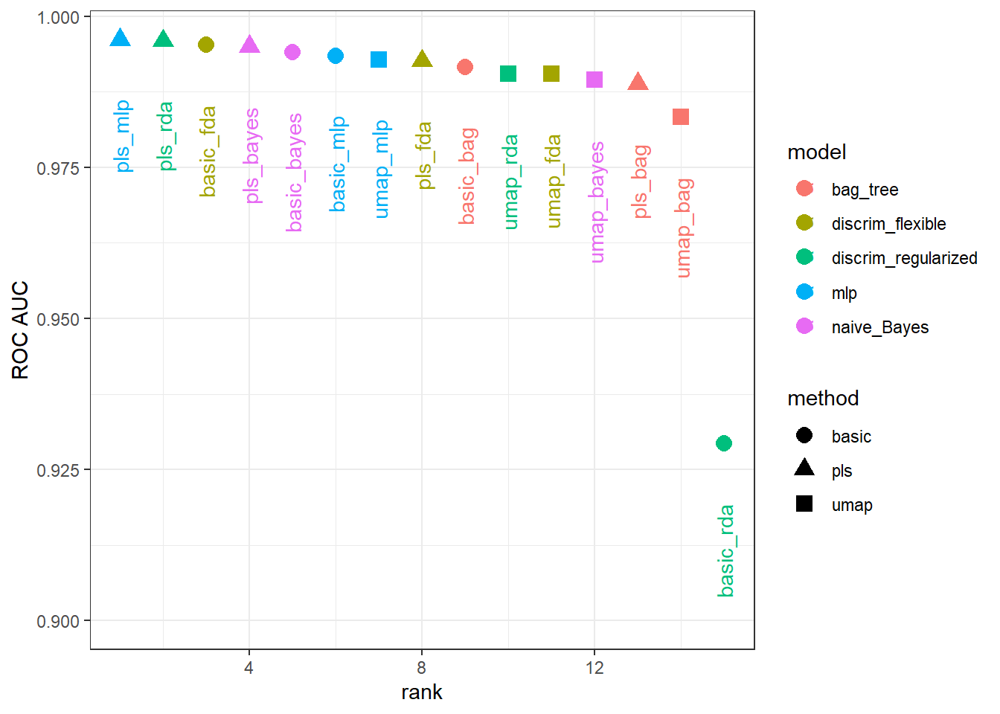
It is clear from these results that most models give very good performance; there are few bad choices here. For demonstration, we’ll use the RDA model with PLS features as the final model. We will finalize the workflow with the numerically best parameters, fit it to the training set, then evaluate with the test set:
What are the results for our metric (multiclass ROC AUC) on the testing set?
collect_metrics(rda_res)
## # A tibble: 1 × 4
## .metric .estimator .estimate .config
## <chr> <chr> <dbl> <chr>
## 1 roc_auc hand_till 0.995 Preprocessor1_Model1Pretty good! We’ll use this model in the next chapter to demonstrate variable importance methods.
16.7 Chapter Summary
Dimensionality reduction can be a helpful method for exploratory data analysis as well as modeling. The recipes and embed packages contain steps for a variety of different methods and workflowsets facilitates choosing an appropriate method for a data set. This chapter also discussed how recipes can be used on their own, either for debugging problems with a recipe or directly for exploratory data analysis and data visualization.
The learntidymodels package can be found at its GitHub site: https://github.com/tidymodels/learntidymodels↩︎
The mixOmics package is not available on CRAN, but instead on Bioconductor: https://doi.org/doi:10.18129/B9.bioc.mixOmics↩︎